List of Multiplayer Games I am currently playing on and off stream.
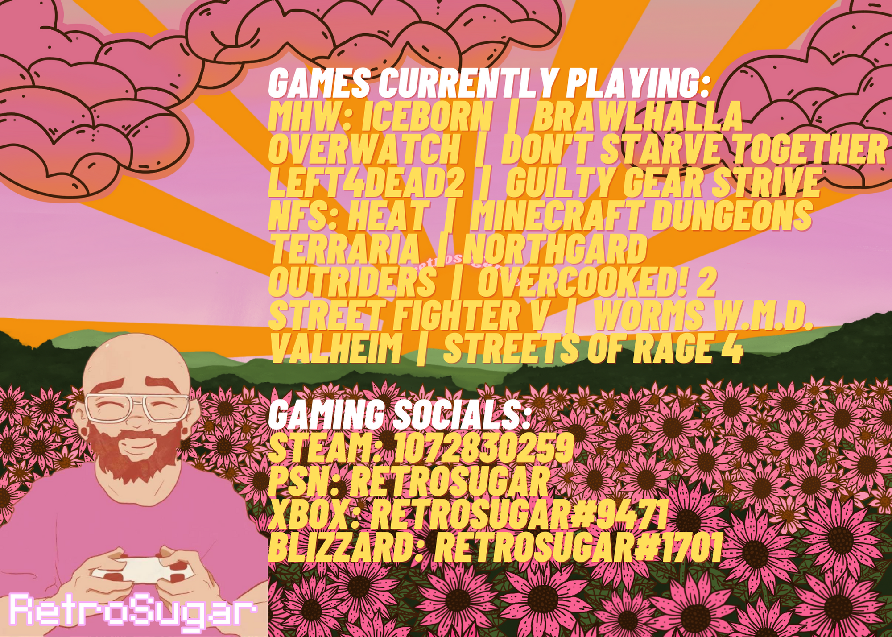Monster Hunter World:Iceborne
Up to 4 players

The line between an expansion and a full-blown sequel is one Monster Hunter World: Iceborne comes close to blurring into oblivion. While this is not an entirely new game in feel or structure when compared to Monster Hunter: World, it adds a new story nearly as large as the base game’s with almost as many new monsters to kill, carve, and wear like a celebratory tuxedo. Couple that with innumerable quality-of-life improvements (plus a few exciting surprises along the way) and Iceborne manages to hit the high bar set by Monster Hunter: World no matter what you call it.
Brawlhalla
Up to 8 players
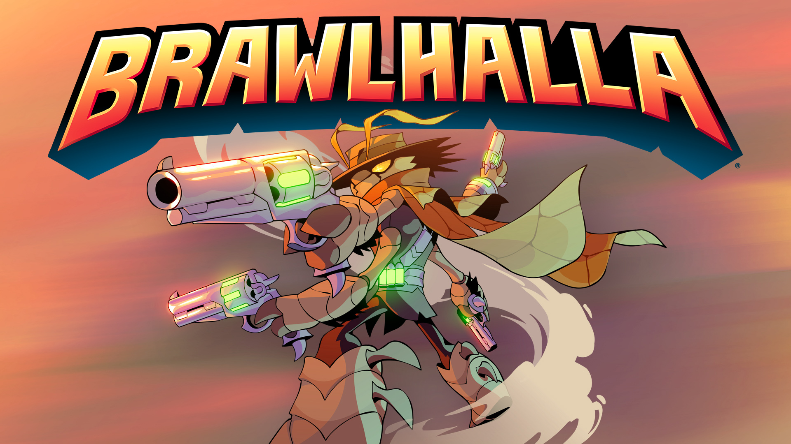In an epic battle of power and skill, history's greatest warriors battle it out to see who is the best. These brawls are peppered with lethal weapons and devices. Every weapon you acquire alters your playing style. Brawlhalla is a free 2D platform fighting game that supports up to 8 local or online players with full cross-play for PC, Xbox One, Xbox Series X, PS5, PS4, iOS, and Android.
Overwatch
Up to 6 players

Blizzard Entertainment developed and released Overwatch, a 2016 team-based multiplayer first-person shooter. Overwatch is a "hero shooter" that divides players into two teams of six and allows them to choose from a wide roster of characters known as "heroes" each with their own special powers. Teams compete against one other to fulfill map-specific objectives in a set amount of time. After the game was released, Blizzard added new characters, maps, and game modes for free, with the only additional cost to players being the purchase of cosmetic goods from optional loot boxes. It was released in May 2016 for PlayStation 4, Xbox One, and Windows, and in October 2019 for Nintendo Switch. In March 2021, a performance patch for the Xbox Series X and Series S was published. By June 2021, cross-platform play was available on all platforms.
Don't Starve Together
Up to 4 players
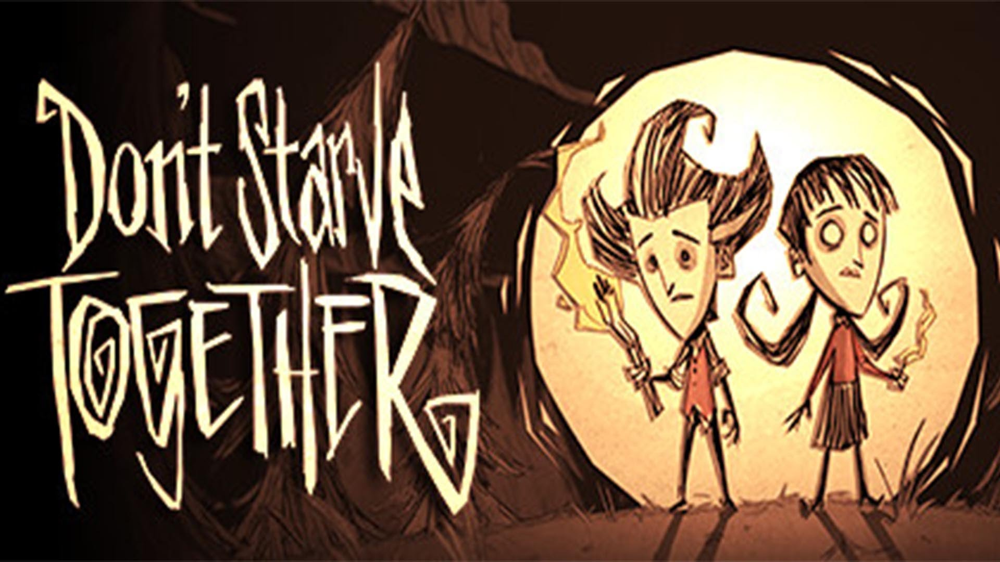Don't Starve Together is a standalone multiplayer addition for Don't Starve, a brutal outdoor survival game. Don't Starve Together now includes Reign of Giants, which introduces new characters, seasons, creatures, biomes, and Giant new challenges. Enter a weird and unknown world teeming with strange animals, perils, and surprises. Gather materials to make goods and constructions that are appropriate for your survival style. Play your own game as you try to figure out what's going on in this weird land. Play a private game with your pals or take a risk online with strangers. To survive the tough environment, team up with other players or go it alone. Do whatever it takes, but above all, don't starve.
Left4Dead2
Up to 4 players

Valve Corporation's Left 4 Dead 2 is a single-player and multiplayer co-operative survival horror first-person shooter game. It's the follow-up to Left 4 Dead. Valve Corporation initially revealed it at Microsoft's E3 2009 press conference on June 1, 2009.
Guilty Gear Strive
2 players
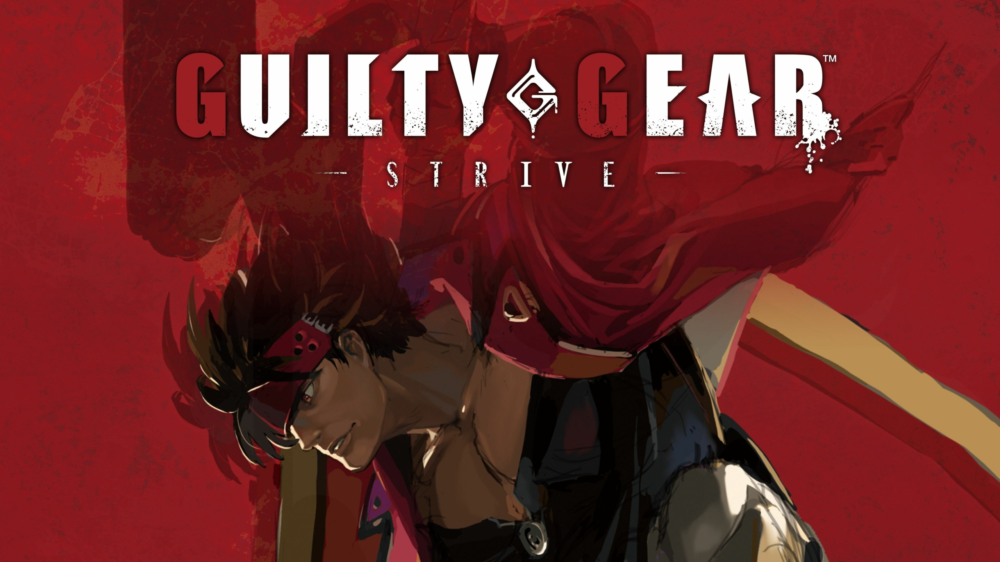The critically renowned Guilty Gear fighting game franchise continues with “Guilty Gear -Strive-.” “Guilty Gear -Strive-,” directed by Daisuke Ishiwatari and created by Arc System Works, continues the series' tradition of innovative hybrid 2D/3D cell-shaded aesthetics and intense, gratifying gameplay.
Need For Speed: Heat
Up to 16 players
Need for Speed Heat is a racing game set in an open world setting named Palm City, which is a fictionalized representation of Miami, Florida and its environs. Players can earn REP by participating in illegal street racing late at night.
Minecraft: Dungeons
Up to 4 players
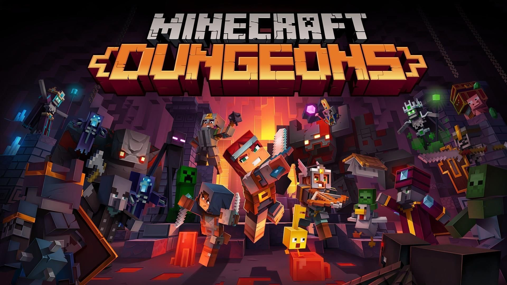What is Minecraft: Dungeons all about? It's a brand-new action-adventure game inspired by traditional dungeon crawlers, in which you'll continuously discover new weapons and things to aid you in defeating a merciless swarm of fresh-and-nasty creatures. Through valleys, bogs, and, of course, mines, you'll battle or flee!
Terraria
Up to 8 players

Terraria is a 2D sandbox game featuring single-player and multiplayer modes that concentrates around exploration, building, crafting, battle, survival, and mining. The game's 2D sprite tile-based graphics style is evocative of the Super NES's 16-bit sprites.
Northgard
Up to 8 players
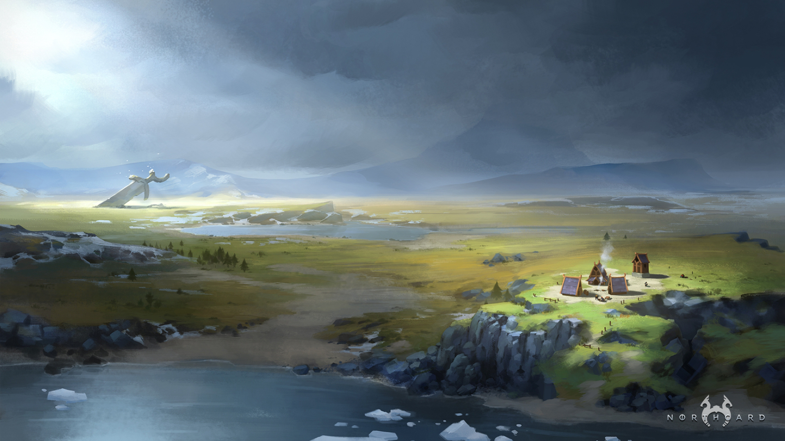Northgard is a Norse mythology-inspired strategy game in which you play as a Viking clan contending for control of a mysterious uncharted land. After years of tireless search, valiant Vikings have discovered Northgard, a new region rich in mystery, peril, and riches.
Outriders
Up to 3 players
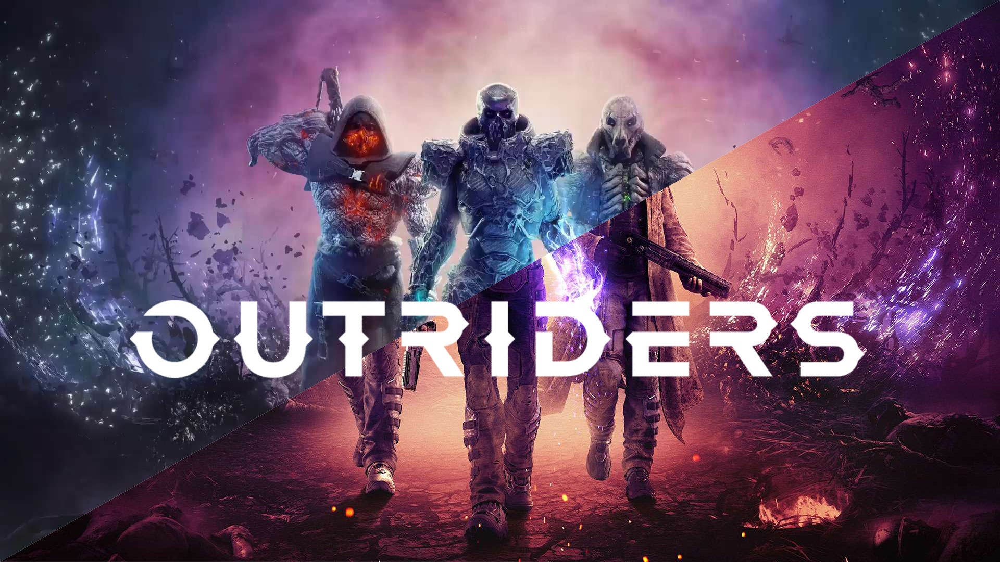Outriders is a third-person shooter that incorporates aspects of role-playing games. A talent tree is present in the game, allowing players to acquire and upgrade their abilities. Players can fight foes with a variety of weaponry, including shotguns and assault rifles, and firearms can be altered with weapon mods.
Overcooked! 2
Up to 4 players
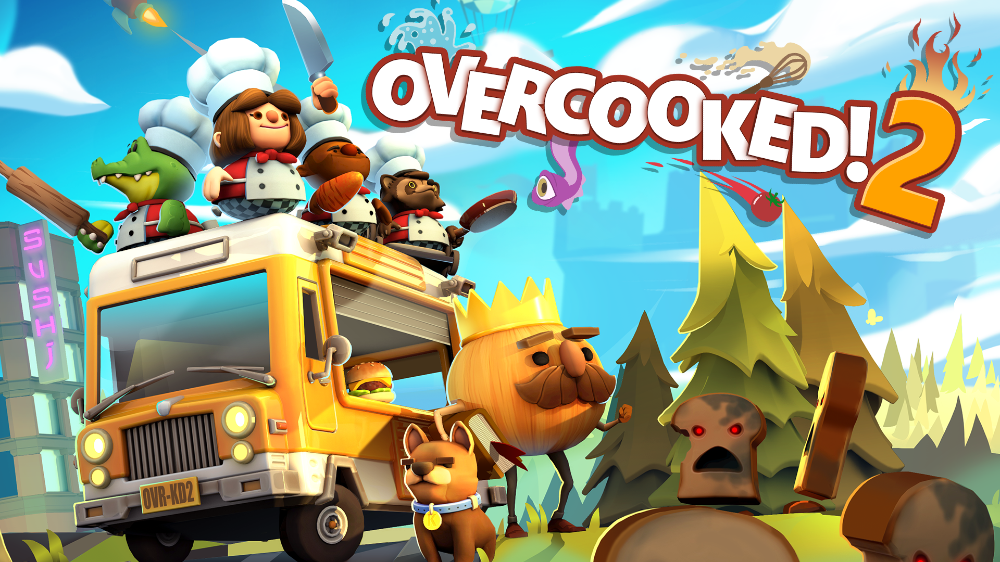Overcooked 2 is a chaotic co-op cooking game for 1-4 players in which you must serve a variety of foods to eager guests in a succession of unorthodox kitchens, including sushi, pasta, cakes, burgers, and burritos.
Street Fighter V
2 players
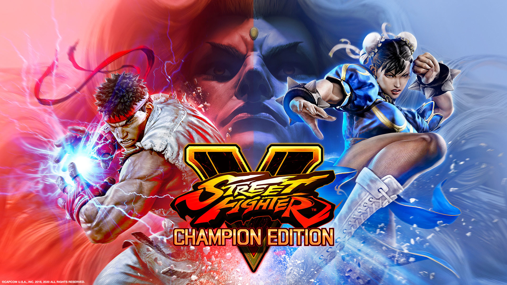Capcom and Dimps collaborated on Street Fighter V, which was released in 2016 for the PlayStation 4 and Microsoft Windows by Capcom. Street Fighter V follows in the footsteps of earlier Street Fighter games by employing a side-scrolling fighting gameplay system.
Worms W.M.D.
Up to 8 players
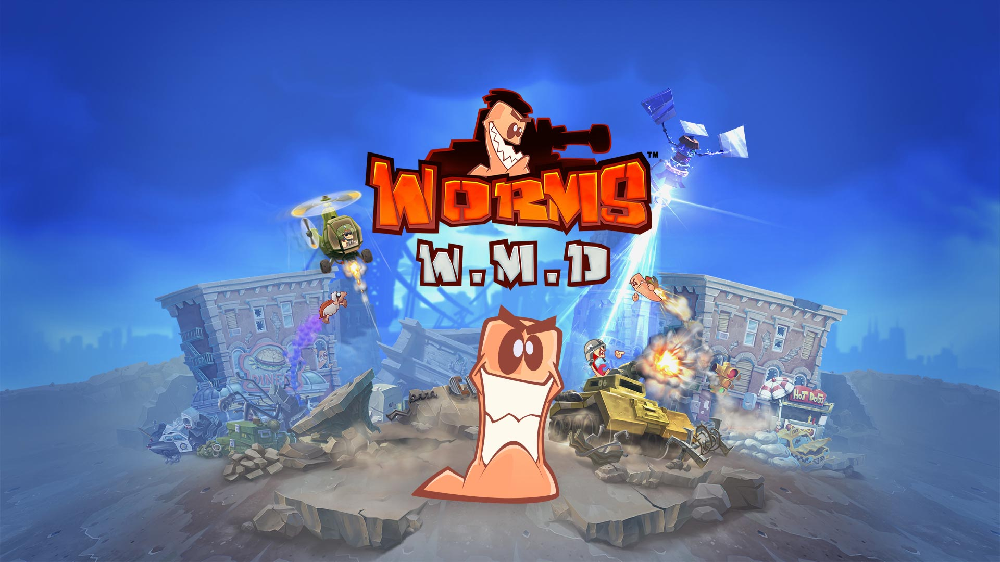Worms W.M.D is a hand-drawn 2D artillery turn-based tactics video game launched on August23, 2016 in the Worms series.
Valheim
Up to 10 players
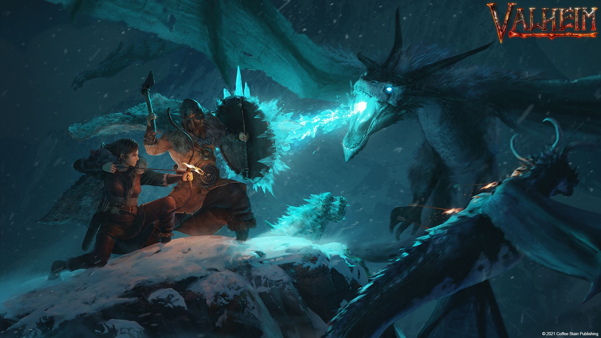Valheim is an independent survival game inspired by Viking culture that is now in early access. It's a single-player and co-op open-world survival and crafting game with PvE (player vs environment) gameplay. This appears to be fairly normal fare for survival games. 18 February 2021
Streets of Rage 4
Up to 4 players
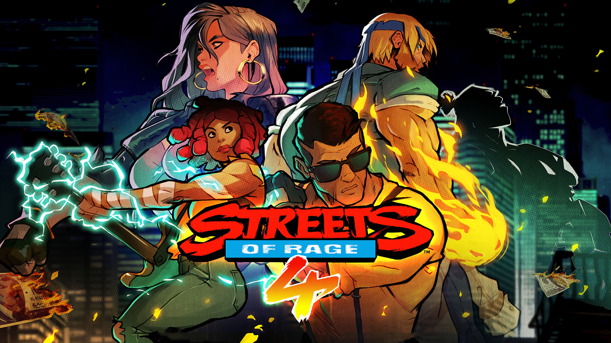Streets of Rage 4 is a side-scrolling beat 'em up in which up to four players locally or two players online fight waves of adversaries using disposable weapons and item pickups, similar to previous entries in the Streets of Rage series from the early 1990s.